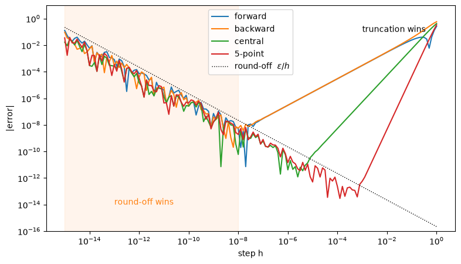
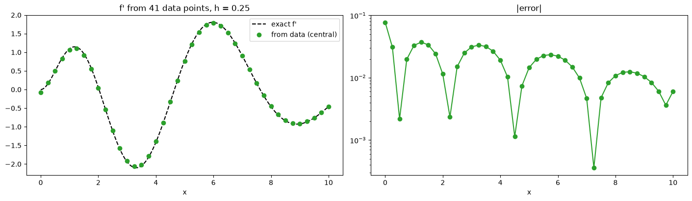

Derivatives from data#
Last class we computed \(f'(x)\) in two ways: symbolically (SymPy) and with finite differences. Today:
part |
question |
tool |
|---|---|---|
A |
how small should the step \(h\) be? |
the V-shaped error plot |
B |
we only have a table of values, no function: how do we get \(f'\)? |
central differences on data |
We use the same function as last class: $\( f(x) = x^2 \sin x \; e^{-x/2}, \qquad x_0 = 1. \)$
The finite-difference formulas from last class are now in the file finite_differences.py. Keep it in the same folder as this notebook. Run the first cell first, then run the notebook from top to bottom.
import numpy as np
import matplotlib.pyplot as plt
"""Finite-difference formulas for the first derivative.
Use in a notebook with
from finite_differences import forward, backward, central, five_point
All formulas follow from Taylor's theorem:
f(x +- h) = f(x) +- h f'(x) + h^2/2 f''(x) +- h^3/6 f'''(x) + ...
"""
def forward(f, x, h):
"""Forward difference (f(x+h) - f(x)) / h. Error O(h)."""
return (f(x + h) - f(x)) / h
def backward(f, x, h):
"""Backward difference (f(x) - f(x-h)) / h. Error O(h)."""
return (f(x) - f(x - h)) / h
def central(f, x, h):
"""Central difference (f(x+h) - f(x-h)) / (2h). Error O(h^2)."""
return (f(x + h) - f(x - h)) / (2 * h)
def five_point(f, x, h):
"""5-point central difference. Error O(h^4)."""
return (-f(x + 2 * h) + 8 * f(x + h) - 8 * f(x - h) + f(x - 2 * h)) / (12 * h)
# a list to loop over, with matching names
FD_NAMES = ["forward", "backward", "central", "5-point"]
FD_METHODS = [forward, backward, central, five_point]
The function and its exact derivative#
We need an exact \(f'\) to measure errors. By the product rule (or from SymPy last class): $\( f'(x) = e^{-x/2}\left(2x\sin x + x^2\cos x - \tfrac{x^2}{2}\sin x\right). \)$
def f(x):
return x**2 * np.sin(x) * np.exp(-x/2)
def df_exact(x):
return np.exp(-x/2) * (2*x*np.sin(x) + x**2*np.cos(x) - 0.5*x**2*np.sin(x))
x0 = 1.0
exact = df_exact(x0)
print(f"f(1) = {f(x0):.15f}")
print(f"f'(1) = {exact:.15f}")
f(1) = 0.510377951544573
f'(1) = 1.093276841339319
To use a function from the .py file, call it like any other function:
print("central, h = 0.1:", central(f, x0, 0.1), " error:", abs(central(f, x0, 0.1) - exact))
central, h = 0.1: 1.0879418777721521 error: 0.005334963567166895
Part A. Choosing \(h\): the V-shaped error plot#
We compute the error of each formula for many step sizes \(h\), from \(10^{-15}\) to \(1\), and plot it on a log-log plot.
np.logspace(-15, 0, 151) gives 151 values of \(h\), evenly spaced on a log scale. The formulas work with NumPy arrays, so we pass all of them at once.
hs = np.logspace(-15, 0, 151)
fig, ax = plt.subplots(figsize=(9, 5))
for name, D in zip(FD_NAMES, FD_METHODS):
err = np.abs(D(f, x0, hs) - exact)
ax.loglog(hs, err + 1e-20, label=name) # + 1e-20: avoid log(0)
ax.loglog(hs, 2.2e-16 / hs, "k:", lw=1, label=r"round-off $\varepsilon/h$")
ax.axvspan(1e-15, 1e-8, color="tab:orange", alpha=0.08)
ax.text(1e-13, 1e-14, "round-off wins", color="tab:orange")
ax.text(1e-3, 1e-1, "truncation wins")
ax.set_xlabel("step h"); ax.set_ylabel("|error|")
ax.set_ylim(1e-16, 1e1); ax.legend(loc="lower right")
ax.legend(loc="upper center")
plt.show()

Large \(h\) (right): truncation error. The Taylor terms we dropped. It falls as \(h^p\): slope 1 (forward, backward), 2 (central), 4 (5-point).
Small \(h\) (left): round-off error. \(f(x+h) \approx f(x)\), so their difference loses digits, and we divide by a tiny \(h\). It grows like \(\varepsilon/h\), with \(\varepsilon \approx 2.2\times10^{-16}\).
Each curve is a V. The best \(h\) is at the bottom of the V. Read off from the plot (ignore the single lucky dips on the left, where round-off makes the curves jagged):
formula |
best \(h\) |
best error |
|---|---|---|
forward, backward |
\(\approx 10^{-8}\) |
\(\approx 10^{-8}\) |
central |
\(\approx 10^{-5}\) |
\(\approx 10^{-11}\) |
5-point |
\(\approx 10^{-3}\) |
\(\approx 10^{-13}\) |
Never exact: even at the best \(h\) we lose 3 to 8 of the 16 digits.
Part B. Derivatives from data (central differences)#
Often we do not have a function to call. We have a table: measurements, or numbers saved by another program: $\( (x_0, f_0),\ (x_1, f_1),\ \dots,\ (x_N, f_N), \qquad x_{i+1} - x_i = h. \)$
Two things change:
We cannot evaluate \(f(x+h)\) for an \(h\) of our choice. \(h\) is fixed by the data.
At the two ends there is a neighbour on one side only.
Step 1: the table of values#
We make the table from \(f\) here, but from now on we pretend we only have the two arrays xs and fs.
xs = np.linspace(0, 10, 41) # 41 points, spacing h = 0.25
fs = f(xs) # the "measured" values
h = xs[1] - xs[0]
print("h =", h)
print(f"{'i':>3s} {'x_i':>6s} {'f_i':>10s}")
for i in range(5):
print(f"{i:3d} {xs[i]:6.2f} {fs[i]:10.5f}")
print("...")
h = 0.25
i x_i f_i
0 0.00 0.00000
1 0.25 0.01365
2 0.50 0.09334
3 0.75 0.26352
4 1.00 0.51038
...
Step 2: interior points, central difference#
At an interior point \(x_i\) both neighbours exist: $\( f'_i \approx \frac{f_{i+1} - f_{i-1}}{2h}, \qquad \text{error} = O(h^2). \)$
With NumPy slices we do all interior points at once:
fs[2:]is \(f_2, f_3, \dots, f_N\) (the right neighbours \(f_{i+1}\)),fs[:-2]is \(f_0, f_1, \dots, f_{N-2}\) (the left neighbours \(f_{i-1}\)),
for \(i = 1, \dots, N-1\).
d_interior = (fs[2:] - fs[:-2]) / (2*h) # f'_1, ..., f'_{N-1}
print("number of interior points:", len(d_interior))
print("f'(x_2) from data:", d_interior[1], " exact:", df_exact(xs[2]))
number of interior points: 39
f'(x_2) from data: 0.4997517347778009 exact: 0.4975703583807184
Step 3: the two end points#
At \(x_0\) there is no \(f_{-1}\), and at \(x_N\) no \(f_{N+1}\). Plain forward/backward differences would only be \(O(h)\). Instead we use the two points on the side we have, \(f_1\) and \(f_2\), and combine them so that the \(f''\) term cancels, as in the central difference.
Where it comes from. Taylor’s theorem at \(x_0\), with steps \(h\) and \(2h\): $\( f_1 = f_0 + h f'_0 + \tfrac{h^2}{2} f''_0 + \tfrac{h^3}{6} f'''_0 + \dots \)\( \)\( f_2 = f_0 + 2h f'_0 + 2h^2 f''_0 + \tfrac{4h^3}{3} f'''_0 + \dots \)\( Multiply the first line by 4 and subtract the second. The \)f’’\( terms cancel, since \)4\cdot\tfrac{h^2}{2} - 2h^2 = 0\(: \)\( 4f_1 - f_2 = 3f_0 + 2h f'_0 - \tfrac{2h^3}{3} f'''_0 + \dots \)\( Solve for \)f’0\(: \)\( f'_0 \approx \frac{-3f_0 + 4f_1 - f_2}{2h}, \qquad \text{error} \approx \frac{h^2}{3} f'''_0 = O(h^2). \)\( At the right end, do the same with steps \)-h\( and \)-2h\( (replace \)h\( by \)-h\(, and \)f_1, f_2\( by \)f{N-1}, f_{N-2}\(): \)\( f'_N \approx \frac{3f_N - 4f_{N-1} + f_{N-2}}{2h}. \)$
Both are \(O(h^2)\), like the central difference, but with an error twice as large (\(\tfrac{h^2}{3}\) instead of \(\tfrac{h^2}{6}\)).
d_first = (-3*fs[0] + 4*fs[1] - fs[2]) / (2*h)
d_last = ( 3*fs[-1] - 4*fs[-2] + fs[-3]) / (2*h)
d_bwd = (fs[-1] - fs[-2]) / h # plain backward, for comparison
print(f"x = {xs[0]}: 3-point {d_first:9.5f} exact {df_exact(xs[0]):9.5f}")
print(f"x = {xs[-1]}: 3-point {d_last:9.5f} plain backward {d_bwd:9.5f} exact {df_exact(xs[-1]):9.5f}")
x = 0.0: 3-point -0.07752 exact 0.00000
x = 10.0: 3-point -0.46142 plain backward -0.53859 exact -0.45539
Step 4: all together#
We put Steps 2 and 3 into one function, derivative_from_data(fvals, h), which takes a table of values and returns the derivative at every point.
def derivative_from_data(fvals, h):
# derivative of tabulated values f_0, ..., f_N with spacing h
fvals = np.asarray(fvals, dtype=float)
d = np.empty_like(fvals)
d[1:-1] = (fvals[2:] - fvals[:-2]) / (2*h) # interior: central
d[0] = (-3*fvals[0] + 4*fvals[1] - fvals[2]) / (2*h) # left end: one-sided 3-point
d[-1] = ( 3*fvals[-1] - 4*fvals[-2] + fvals[-3]) / (2*h) # right end: one-sided 3-point
return d
We plot it against the exact derivative (which we would not have for real data; here it is our check).
d = derivative_from_data(fs, h)
xx = np.linspace(0, 10, 400)
fig, axs = plt.subplots(1, 2, figsize=(14, 4), constrained_layout=True)
axs[0].plot(xx, df_exact(xx), "k--", lw=1.5, label="exact f'")
axs[0].plot(xs, d, "o", color="tab:green", label="from data (central)")
axs[0].set_title(f"f' from {len(xs)} data points, h = {h}"); axs[0].legend()
axs[1].semilogy(xs, np.abs(d - df_exact(xs)), "o-", color="tab:green")
axs[1].set_title("|error|")
for ax in axs: ax.set_xlabel("x")
plt.show()

Step 5: more data points, smaller error#
The only way to make \(h\) smaller is more data. Central differences are \(O(h^2)\): halve \(h\) and the error should drop by \(2^2 = 4\).
print(f"{'N':>5s} {'h':>10s} {'max |error|':>13s} {'ratio':>7s}")
prev = None
for N in [41, 81, 161, 321, 641]:
xs_N = np.linspace(0, 10, N)
h_N = xs_N[1] - xs_N[0]
err = np.max(np.abs(derivative_from_data(f(xs_N), h_N) - df_exact(xs_N)))
ratio = "" if prev is None else f"{prev/err:7.2f}"
print(f"{N:5d} {h_N:10.5f} {err:13.2e} {ratio}")
prev = err
N h max |error| ratio
41 0.25000 7.75e-02
81 0.12500 2.53e-02 3.06
161 0.06250 7.07e-03 3.58
321 0.03125 1.86e-03 3.80
641 0.01562 4.77e-04 3.90
The ratio approaches 4: the error is \(O(h^2)\).
Step 6: NumPy does it too#
np.gradient(fs, h, edge_order=...) computes the derivative of a table of values.
Interior points: always the central difference \((f_{i+1} - f_{i-1})/2h\).
End points:
edge_orderchooses the formula, by its order in \(h\):
|
formula at the ends |
error at the ends |
|---|---|---|
|
plain forward / backward, \((f_1 - f_0)/h\) |
\(O(h)\) |
|
one-sided 3-point, \((-3f_0 + 4f_1 - f_2)/2h\) |
\(O(h^2)\) |
So edge_order=2 is exactly our derivative_from_data, and the ends are as accurate as the interior. Always pass edge_order=2: the default 1 makes the two end points less accurate than the rest.
d_np2 = np.gradient(fs, h, edge_order=2)
d_np1 = np.gradient(fs, h) # default: edge_order=1
print("edge_order=2, largest difference from our function:", np.max(np.abs(d_np2 - d)))
print()
print(f"{'':14s} {'x = 0':>10s} {'x = 10':>10s}")
print(f"{'exact':14s} {df_exact(xs[0]):10.5f} {df_exact(xs[-1]):10.5f}")
print(f"{'edge_order=2':14s} {d_np2[0]:10.5f} {d_np2[-1]:10.5f}")
print(f"{'edge_order=1':14s} {d_np1[0]:10.5f} {d_np1[-1]:10.5f}")
edge_order=2, largest difference from our function: 5.551115123125783e-17
x = 0 x = 10
exact 0.00000 -0.45539
edge_order=2 -0.07752 -0.46142
edge_order=1 0.05458 -0.53859
At \(x = 10\),
edge_order=2is much closer to the exact value.At \(x = 0\),
edge_order=1happens to win: here \(f''(0) = 0\), so the leading error term \(\tfrac{h}{2}f''\) of the forward difference vanishes. This is luck; in generaledge_order=2is the safe choice.
Comparison at \(x_0 = 1\)#
names = ["forward, h = 1e-8", "central, h = 1e-5", "5-point, h = 1e-3"]
values = [forward(f, x0, 1e-8), central(f, x0, 1e-5), five_point(f, x0, 1e-3)]
print(f"{'method':20s} {'derivative':>20s} {'error':>10s}")
for name, v in zip(names, values):
print(f"{name:20s} {float(v):20.15f} {abs(v - exact):10.1e}")
method derivative error
forward, h = 1e-8 1.093276846830804 5.5e-09
central, h = 1e-5 1.093276841285240 5.4e-11
5-point, h = 1e-3 1.093276841338743 5.8e-13
finite differences |
symbolic (SymPy) |
|
|---|---|---|
needs |
values of \(f\) |
a formula for \(f\) |
choose a step \(h\)? |
yes |
no |
accuracy |
\(10^{-8}\) to \(10^{-13}\) |
exact |
works on a table of data? |
yes |
no |
Only data? Central differences inside, one-sided 3-point at the ends (
np.gradient(fs, h, edge_order=2)).Have a formula? Differentiate it symbolically, and check with a central difference.
Exercises#
Syntax
task |
call |
|---|---|
finite differences |
|
derivative from data |
|
log-log plot |
|
Exercise 1 (V-shape). Let \(f(x) = \dfrac{\ln(1 + x^2)}{1 + x}\), \(x_0 = 1\).
(a) Compute the exact \(f'(1)\) by hand with the quotient rule (or with SymPy, as last class).
(b) Using (a) as the reference, plot the error of central and five_point against \(h \in [10^{-15}, 1]\) on a log-log plot. Read off the best \(h\) and the smallest error for each.
# Exercise 1
Exercise 2 (data). A car’s position (in m) is recorded every \(0.5\) s:
\(t\) (s) |
0 |
0.5 |
1.0 |
1.5 |
2.0 |
2.5 |
3.0 |
|---|---|---|---|---|---|---|---|
\(s\) (m) |
0.0 |
2.6 |
10.1 |
22.4 |
39.8 |
61.9 |
89.1 |
As NumPy arrays:
t = np.array([0.0, 0.5, 1.0, 1.5, 2.0, 2.5, 3.0]) # time (s)
s = np.array([0.0, 2.6, 10.1, 22.4, 39.8, 61.9, 89.1]) # position (m)
(a) Compute the velocity \(v = ds/dt\) at every time with derivative_from_data. Check with np.gradient.
(b) Compute the acceleration \(a = dv/dt\) by applying the same function to your velocities. Is the acceleration roughly constant?
(c) Why can’t you make \(h\) smaller here, as we did in Part A?
# Exercise 2
t = np.array([0.0, 0.5, 1.0, 1.5, 2.0, 2.5, 3.0]) # time (s)
s = np.array([0.0, 2.6, 10.1, 22.4, 39.8, 61.9, 89.1]) # position (m)